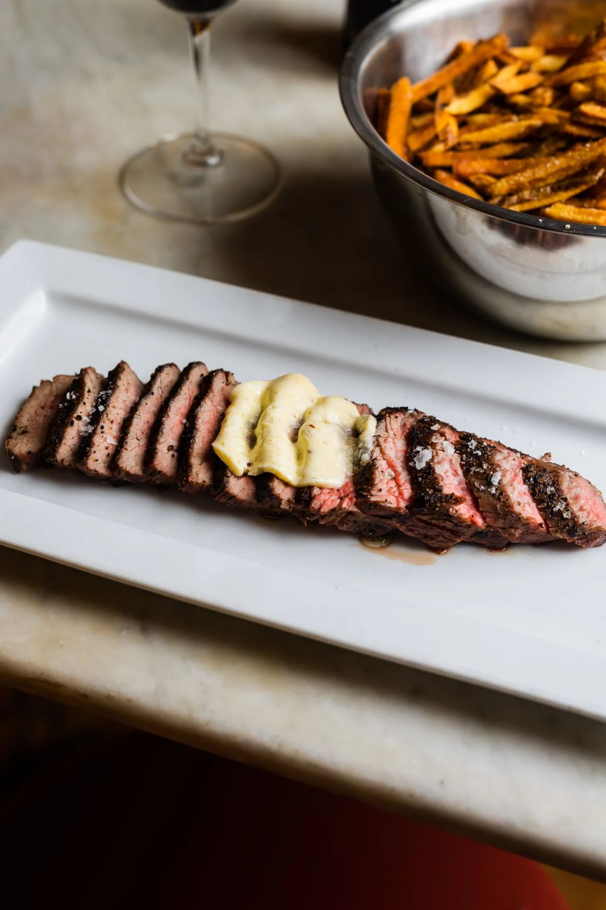
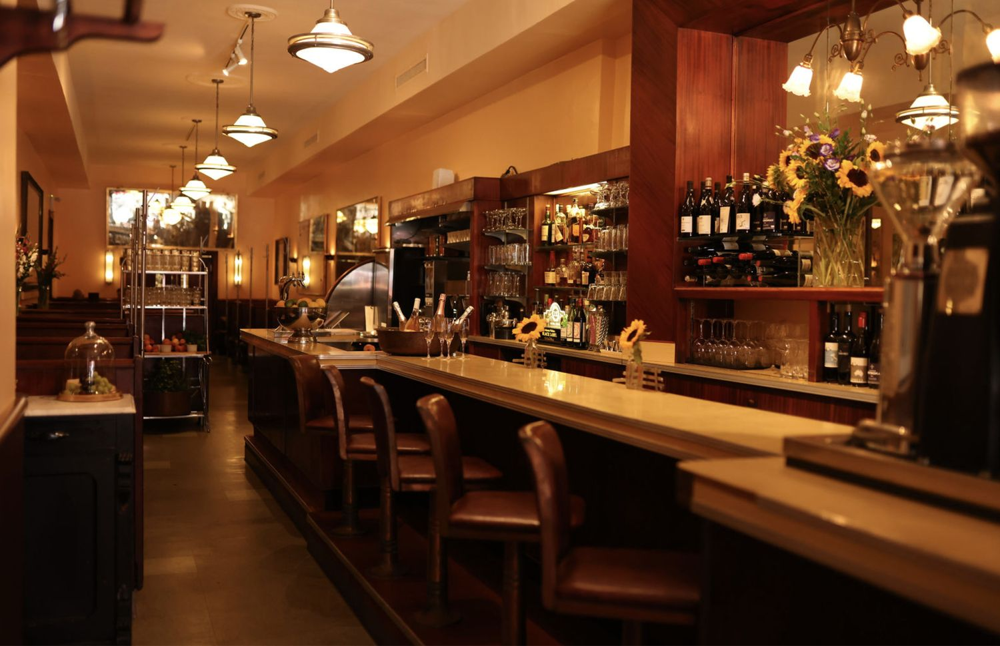
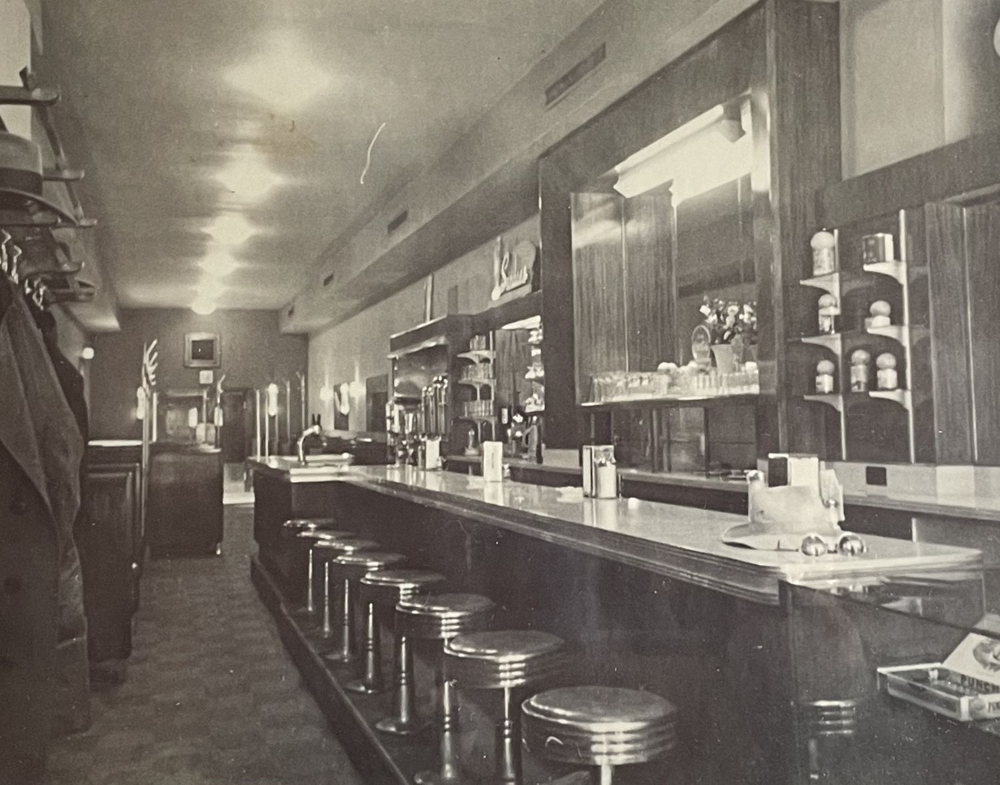
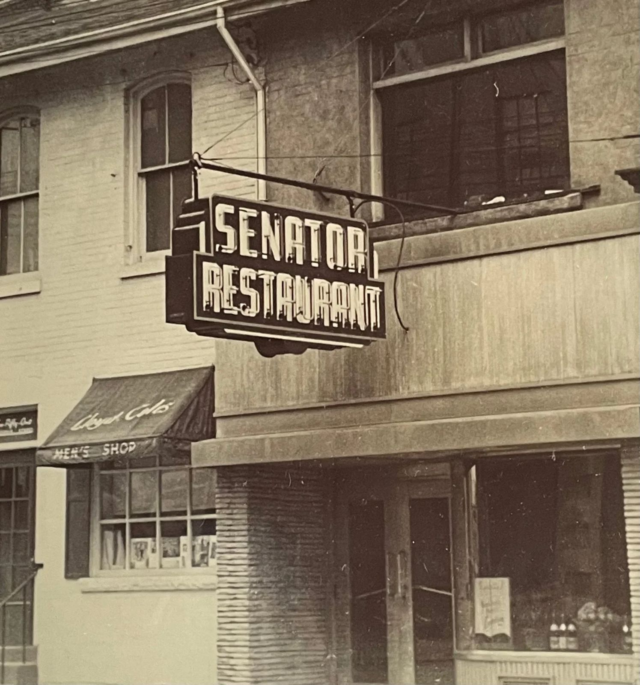
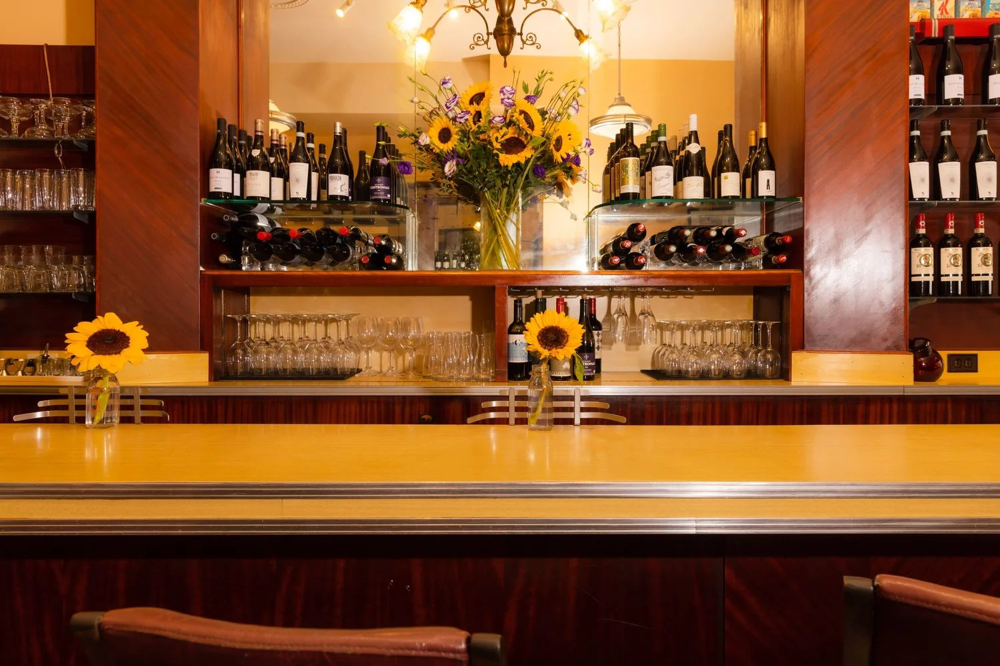
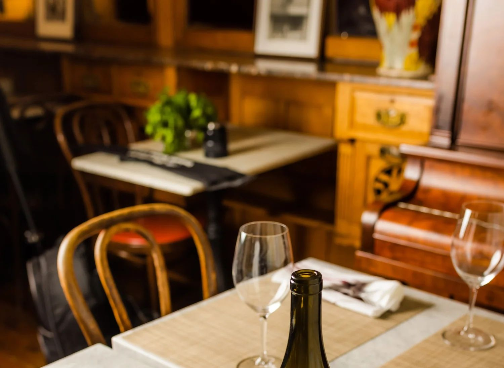
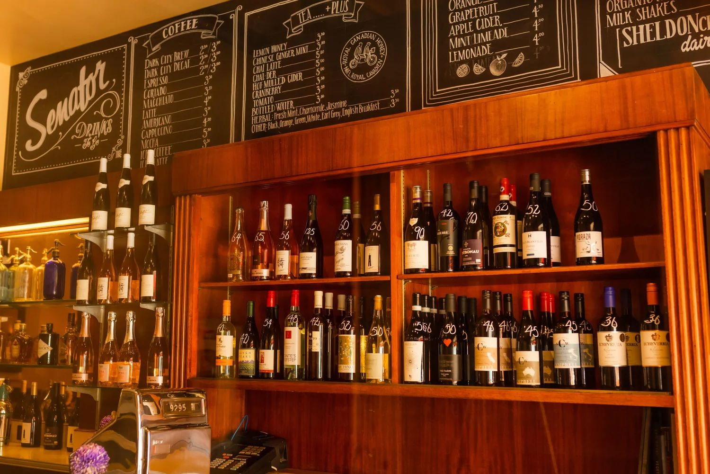
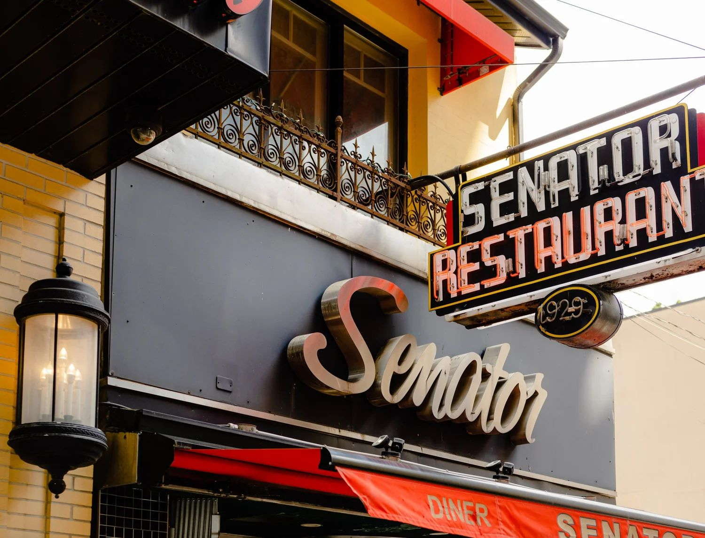

Dinner, from the grill
Butcher's Cut $46
10 oz New York striploin, hand-cut fries, compound herb butter and roasted garlic aioli.

249 Victoria Street, Toronto. Since 1948.
Classic comfort food, 1940s booths and honey from our own organic farm in Caledon. Now you can book your table online.
Our story
The Senator began as the Busy Bee Diner in 1929, with an open kitchen and a dining counter serving hearty comfort food. In 1948 George Nicolau, a cook with a vision, renovated and enlarged it and renamed it The Senator. The back bar was built by the Toronto Refrigeration Company, and its trademark is still there today.
Since 1984 The Senator has been owned by the Sniderman family, who have kept family close to heart for generations of Torontonians and visitors alike.




From our farm to your table
We produce our own honey and work with more than a dozen of the finest local purveyors for the ingredients we serve every day. Taste it in the Brussels sprouts, the Honey Dijon Salmon and The Busy Bee cocktail.
As featured in
Reservations
Pick dinner or brunch, choose a time and you are done. You will get a confirmation by email right away.


Groups and private events
Bring the whole table, or take over Upstairs at The Senator, which is currently used solely for private events. Send us the details and we will be in touch.
Auto-reply preview
From: The Senator Restaurant <senatorrestaurant@rogers.com>
Subject: We got your event inquiry
Hi Priya,
Thank you for thinking of The Senator for your holiday dinner. We have your request for 24 guests on Saturday, Dec 12, and a member of our team will be in touch to talk through the details.
If you need us sooner, call (416) 364-7517.
The Senator
249 Victoria Street, Toronto
Demo only. Nothing was sent.
Optional feature
The Senator does not offer online ordering today. This is an optional section we can switch on or leave out.

Visit
Dinner: Tuesday to Saturday, 5pm to 8pm
Brunch: Saturday and Sunday, 9:30am to 2pm
Some street parking on Victoria St, a private lot directly beside us, and Green P underground parking at Dundas and Victoria.
Wheelchairs can enter and be seated on the main floor. Our bathroom is downstairs and is not wheelchair accessible.